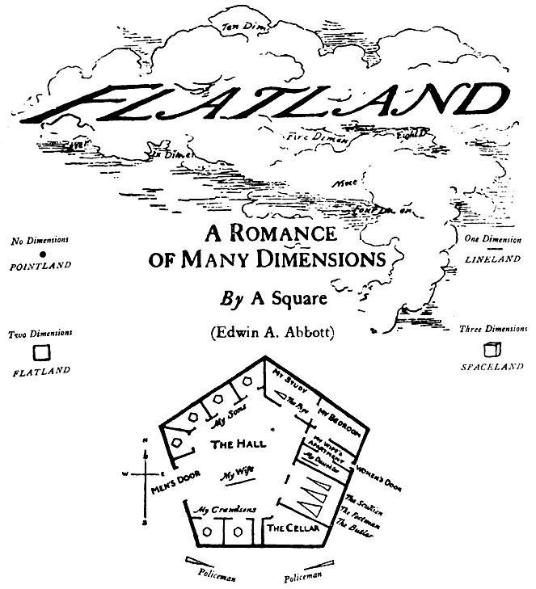

Faiz Surani
Welcome!
I’m Faiz, a Computing major at UC Santa Barbara. Here you can find some stuff I’ve written and done.Poems
- Homes - Aug. 25, 2015
Policy and Law
- Deplatforming and the Case for Breaking Up Big Tech - Jun. 04, 2019
Flatland: A Romance of Many Dimensions
